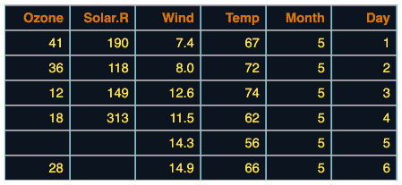

| theme_tron_legacy {flextable} | R Documentation |
Apply theme tron legacy to a flextable
theme_tron_legacy(x)
x |
a flextable object |

Theme functions are not like 'ggplot2' themes. They are applied to the existing table immediately. If you add a row in the footer, the new row is not formatted with the theme. The theme function applies the theme only to existing elements when the function is called.
That is why theme functions should be applied after all elements of the table have been added (mainly additionnal header or footer rows).
If you want to automatically apply a theme function to each flextable,
you can use the theme_fun argument of set_flextable_defaults(); be
aware that this theme function is applied as the last instruction when
calling flextable() - so if you add headers or footers to the array,
they will not be formatted with the theme.
You can also use the post_process_html argument
of set_flextable_defaults() (or post_process_pdf,
post_process_docx, post_process_pptx) to specify a theme
to be applied systematically before the flextable() is printed;
in this case, don't forget to take care that the theme doesn't
override any formatting done before the print statement.
Other functions related to themes:
get_flextable_defaults(),
set_flextable_defaults(),
theme_alafoli(),
theme_booktabs(),
theme_box(),
theme_tron(),
theme_vader(),
theme_vanilla(),
theme_zebra()
ft <- flextable(head(airquality)) ft <- theme_tron_legacy(ft) ft